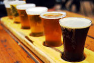

| Grain | Yeast | Hops | Water | Other | |
| American | Domestic 2 Row | WLP001 | Citra | Moderate | None |
| Belgian | Aromatic Malt | WLP530 | Liberty | Moderate | Candi Sugar |
| German | Munich Malt | Wyeast 2124 | Hallertauer | Soft | None |
| Czech | Pilsner | Wyeast 2124 | Saaz | Soft | None |
| English | Marris Otter | US-04 | Fuggles | Moderate | None |
| Brewing is | fun | ||||
|---|---|---|---|---|---|
 I started brewing when I was about 21 because of a YouTube video showing how to make it. My first task was to make a mash tun that would be used to mash grain in order to remove the sugar in the grain and transfer it into the water that the grain is soaked in. Once I had the mash tun built I bought an 8 gallon kettle, propane burner, and carboy for fermenting the wort (unfermented beer). My first batch of beer was a cloan of a wheat beer that I liked at the time called Blue Moon. Since it was my first time brewing, things went less than smooth. I had trouble heating up the water to the right tempature, my mash got stuck which means the grain in the mash tun was restricting water flow, and I ran out of propane. Once the brew day was finally over I pitched yeast into the carboy and waited for about a month for the yeast to ferment the wort into beer. Once that was done I bottled the beer and let it sit for another week to build carbonation. Then it was finally time to try the beer and it was sooo NASTY! Tasted like rubber mixed with vodka. Even though the beer was gross, I was hooked on the hobby.
After the first few batches and a lot of reading on the topic I started to make some good beers. They were not the best beers in the world or anything like that but they were good enough for me and my friends. After about a year I would say that my beers started to taste better than several of their commercial counterparts. Still not the best in the world but better than several out on the shelves in the store. I won my first competition with a beer that I brewed after about a year and a half. It was a belgian dark strong (similar to Rochefort 10) that got some really high scores from judges. Winning that competition has left me with the desire to win gold in every BJCP style listed in the style guide. One down and 50 or so to go.